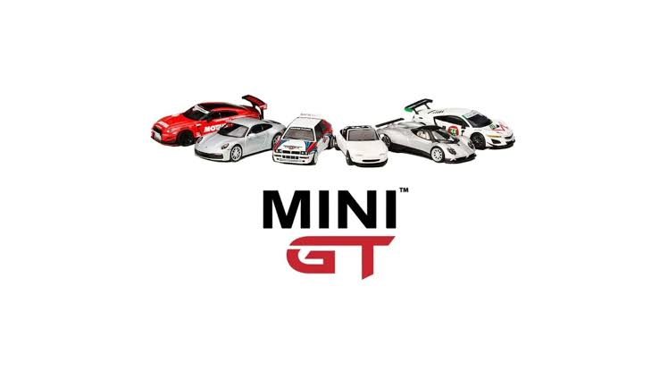

Hot Wheels

Hot Wheels, introduced by Mattel in 1968, are iconic die-cast toy cars loved by enthusiasts worldwide. Known for their innovative designs and detailed craftsmanship, Hot Wheels has evolved over decades, releasing countless models and playsets. see more...
Mini GT
Mini GT is a newer player in the die-cast car world, renowned for its high-quality 1:64 scale models. They focus on realism and collectibility, catering to serious collectors with meticulously detailed replicas of real-life cars. see more...
Comparison of Hot Wheels and Mini GT
While Hot Wheels is famous for its creativity and affordability, Mini GT stands out for its attention to detail and realistic designs. Both brands serve different audiences but share a passion for miniature car artistry.